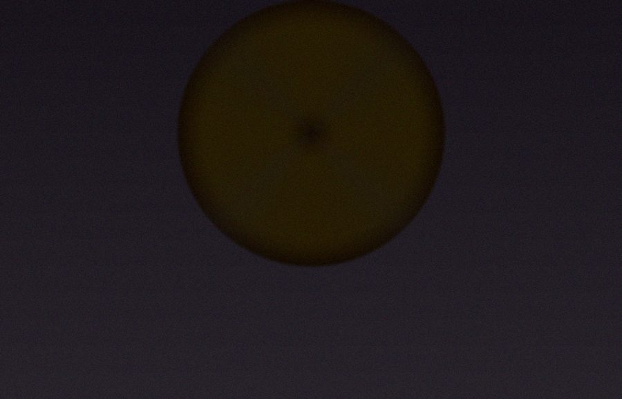

Alopécie androgénique
Densification frontale — 2 séances

Technique brevetée de micropigmentation du cuir chevelu — une solution esthétique non invasive pour masquer la perte de cheveux et retrouver confiance en soi.
Praticien certifié en tricopigmentation capillaire, je me consacre depuis plusieurs années à aider hommes et femmes à retrouver confiance en eux face à la perte de cheveux.
Basé à Saint-Sulpice-la-Pointe (81370), j'interviens sur tout le département du Tarn et les régions limitrophes. Ma formation auprès des fondateurs de la technique — Ennio Orsini et Toni Belfato — me garantit une maîtrise complète de ce procédé breveté.
Technique Tricopigmentation® brevetée Pigments biorésorbables — résultats naturels et évolutifs
La Tricopigmentation® est une technique brevetée mise au point par les spécialistes italiens Ennio Orsini et Toni Belfato. Elle consiste à introduire des micro-pigments biorésorbables dans la couche superficielle du derme, créant une simulation parfaite du follicule pileux pour masquer tout type de perte de cheveux.
Contrairement au tatouage permanent, les micro-pigments utilisés sont biorésorbables et évoluent naturellement avec le temps, permettant des ajustements réguliers selon vos besoins.
Chaque micro-point reproduit fidèlement un follicule pileux. Le résultat est indiscernable d'une vraie repousse capillaire, qu'il s'agisse d'un effet rasé ou d'une densification.
Aucune chirurgie, aucune douleur significative, aucun temps de récupération. La séance se déroule comme une application classique, et vous repartez avec un résultat immédiat.
Analyse de votre situation, définition des objectifs et du protocole personnalisé.
Pose initiale des micro-pigments selon le protocole défini ensemble.
Densification et affinement du résultat pour une couverture optimale.
Entretien périodique selon l'évolution naturelle des pigments.
Glissez sur chaque photo pour découvrir la transformation
Densification frontale — 2 séances
Couverture complète — 3 séances
Dissimulation de cicatrice — 2 séances
Renforcement des zones clairsemées — 2 séances
Recadrage de la ligne frontale — 1 séance
Camouflage des zones dégarnies — 3 séances
Remplissez le formulaire ci-contre pour soumettre votre demande de rendez-vous. Je vous contacte dans les 24h pour confirmer le créneau disponible.
Remplissez le formulaire avec vos disponibilités
Je vous envoie un email de confirmation avec votre créneau
Nous définissons ensemble votre protocole personnalisé